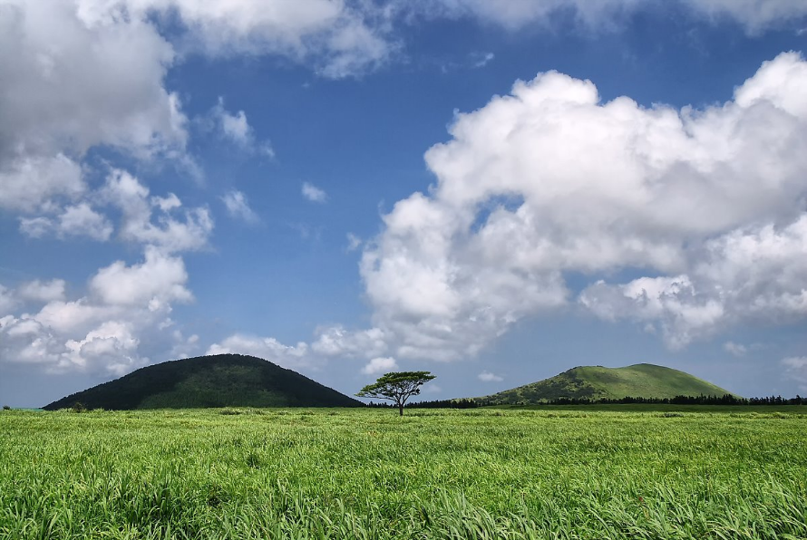
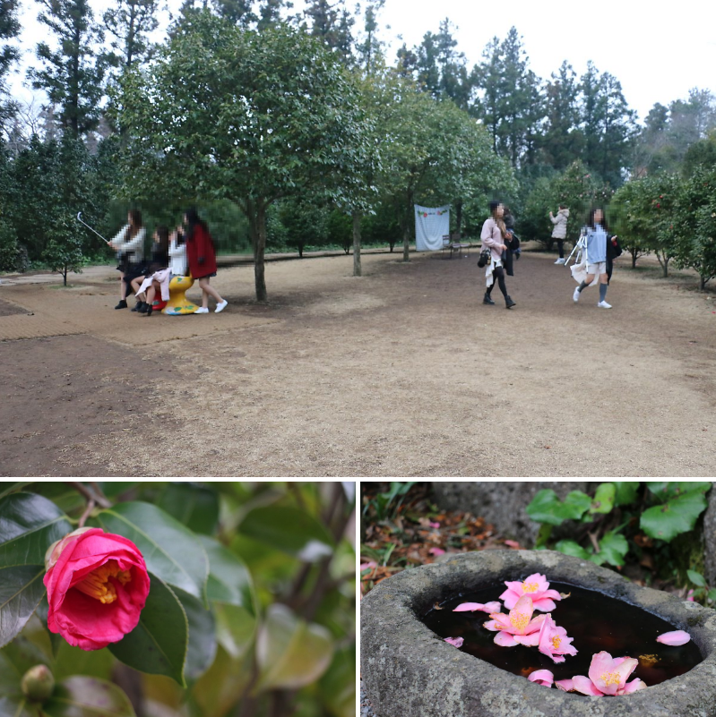
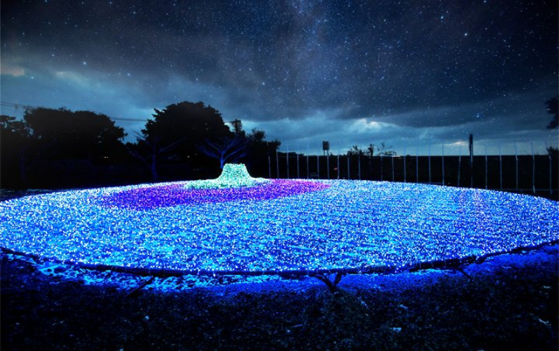
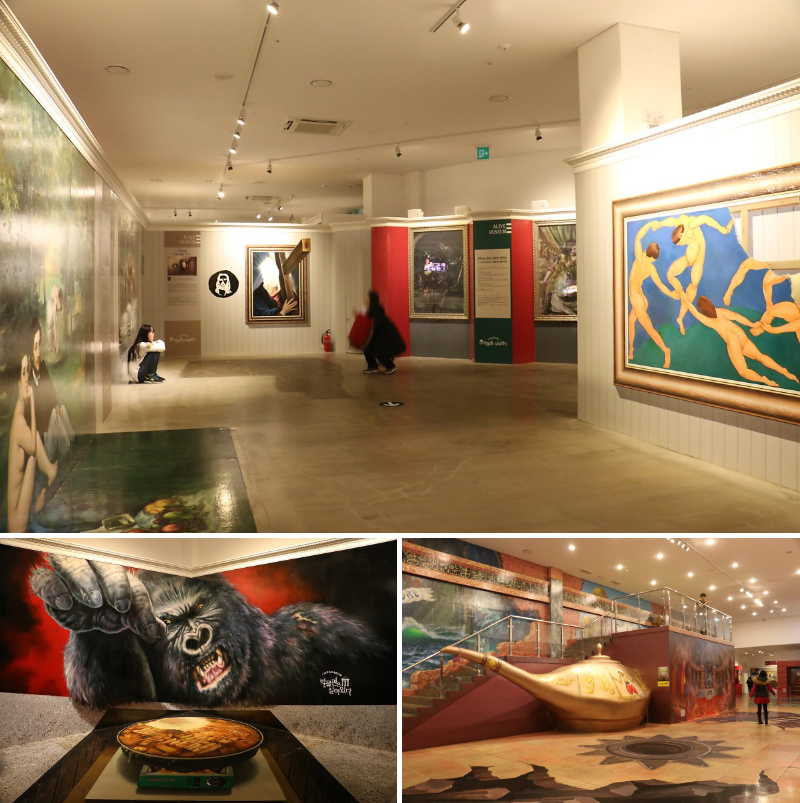

왕따나무는 서귀포 넘어가는 길에 위치한 곳으로 사진에서 보시는듯이 넓은 들판에 나홀로 우뚝서있는 나무입니다.
오름과 그름이 조화를 이루면서 만들어내는 풍경이 아름다워서 제주도에 커플들이 사진을 찍기우해서 많이방문하는곳입니다.

카멜리아힐은 동백언덕이라 불리는 곳으로 소녀시대의 윤아가 화장품 광고를 촬영한 곳으로 알려져 있는 곳입니다.
동백꽃은 사계절 언제나 이쁜 모습을 볼 수 있어서 여행객들이 많이 찾는곳인데요
단지도 정말 넓기 때문에 다양한 동백꽃과 풍경을 만나보실수 있습니다.

제주 불빛 정원은 서귀포 너머가는 곳에 위치한 야경 명소로 사진이 보시듯이 너무 멋진 풍경을 보여주는 곳입낟. 제주시하고도 가깝기 때문에 시내에 머무시는 분들이라면 저녁에 이곳에서 즐거운 시간을 보내는 것도 좋습니다.

중문에 위치한 박물관은 살아있다!! 착시 테마를 주제로 꾸며진 곳이기 때문에 재미있는 사진드을 많이 찍을수 있는 곳입낟. 잡품들의 옆을 설명을 보시면 포즈를 취하면서 찍기 때문에 사진 찍는 것을 싫어한는 분들도 사진찍는 재미에 빠지게됩니다. 중문에 위치하여 있어서 다양한 관광지들과 함께 만나보실수 있는 점과 실내이기 때문에 계절과 날씨에 상관없이 커플드이 많이 찾는 곳입니다.